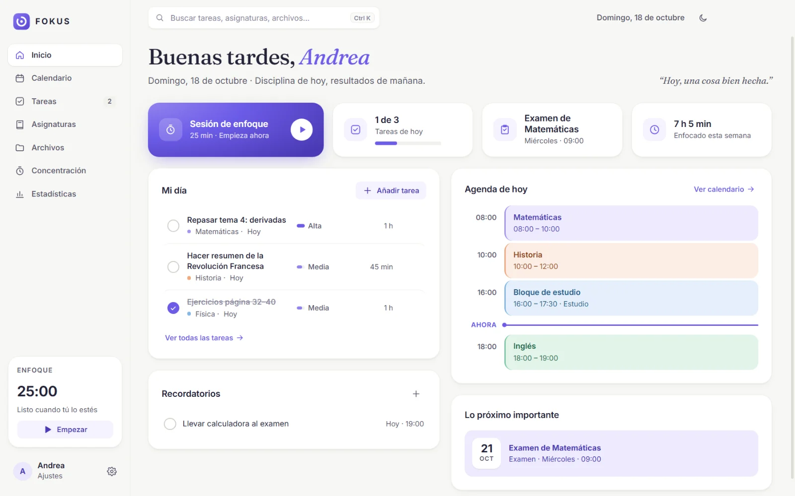
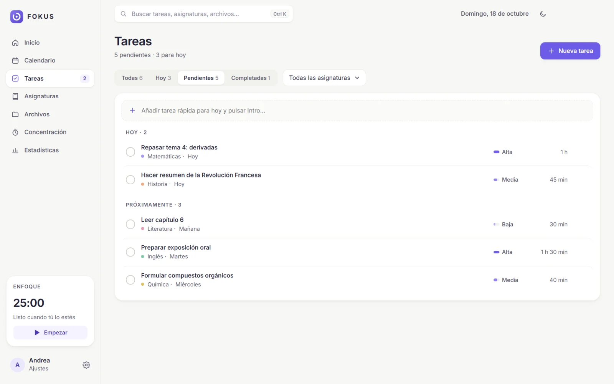
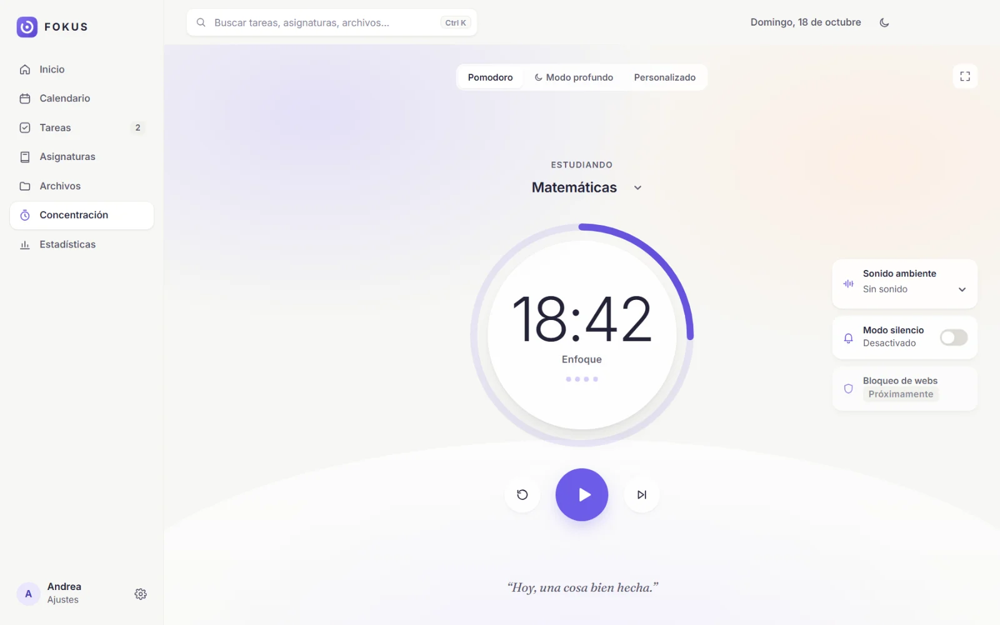
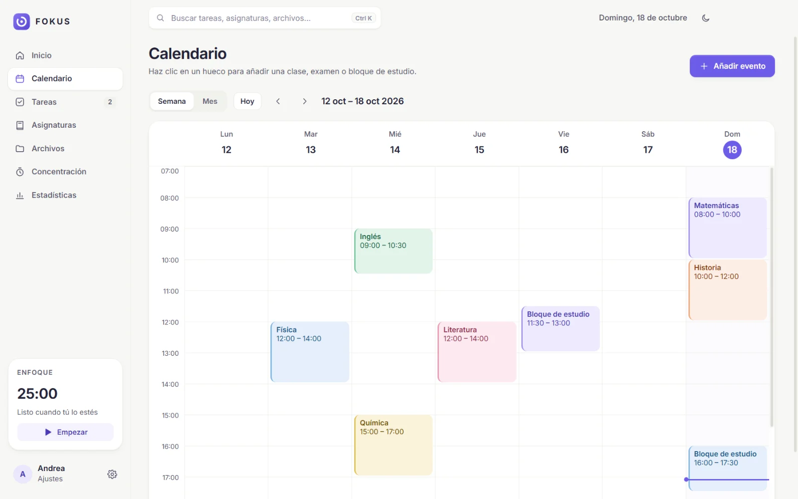
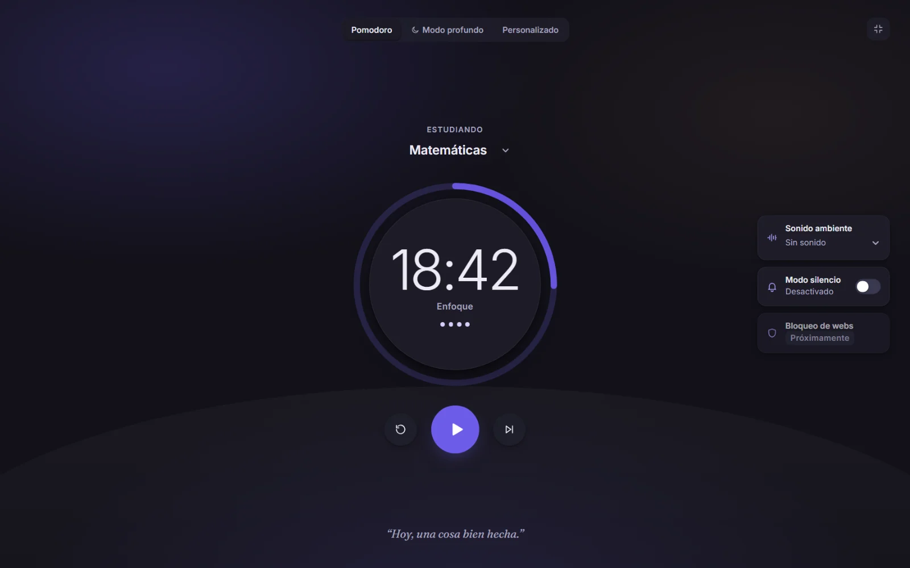

Study Beautifully.
La app de estudio gratuita que ordena tus clases, tareas y apuntes, y te ayuda a concentrarte de verdad.

Todo lo de hoy, en un vistazo.
FOKUS no es un panel de gráficos: es una agenda que te dice qué toca ahora.
- Tareas con prioridad, tiempo estimado y fecha
- Agenda del día con la línea de "ahora"
- Próximo examen o entrega siempre a la vista
- Recordatorios con aviso en Windows

25 minutos de foco de verdad.
Elige asignatura, pulsa play y deja que el anillo haga el resto.
- Pomodoro, modo profundo (50/10) o tus propios tiempos
- Sonido ambiente: lluvia, ruido marrón u olas
- Modo inmersivo a pantalla completa
- Cada bloque cuenta en tus estadísticas

Cada asignatura, su color.
Clases, exámenes, entregas y bloques de estudio en un calendario semanal y mensual. Tus apuntes y PDFs, ordenados por asignatura.

Archivos
Añade cualquier documento o arrástralo a la ventana. FOKUS guarda una copia segura.
Estadísticas reales
Minutos de enfoque por día y por asignatura, racha y tareas hechas.
Modo noche
Día, noche o el modo de tu Windows. Para estudiar de madrugada sin deslumbrarte.
Ligera
Modo ahorro de energía activado de serie: casi no consume mientras estudias.
Se actualiza sola
Te avisa cuando hay versión nueva y se instala solo si tú aceptas.
Recordatorios
Notificaciones de Windows para tus recordatorios y el final de cada bloque.
Igual de bonita a las 2 de la mañana.
Un modo oscuro cuidado al detalle, con los mismos colores de tus asignaturas y sin perder legibilidad.

Tus cosas, solo tuyas.
FOKUS no tiene cuentas, ni anuncios, ni rastreadores. Todo lo que guardas se queda en tu ordenador.
Datos en local
Tareas, calendario y sesiones se guardan en tu equipo. Puedes exportar una copia cuando quieras.
Te pide permiso
Antes de acceder a tus archivos, FOKUS te pregunta. Solo abre lo que tú eliges y nunca ejecuta programas.
Actualizaciones firmadas
Cada actualización lleva una firma digital de TESSEN. Si no es auténtica, FOKUS la descarta.
Descarga FOKUS
Gratis, para Windows 10 y 11 (64 bits).
- Abre el archivo FOKUS-Setup que se ha descargado.
- Elige dónde instalarla y pulsa «Instalar». No hacen falta permisos de administrador.
- Abre FOKUS, escribe tu nombre y empieza a estudiar.
Comprobar el archivo (avanzado)
Huella SHA-512 del instalador (base64):
Se mostrará al publicar la versión.
Preguntas frecuentes
¿FOKUS es gratis de verdad?
Sí. Sin pagos, sin suscripción y sin anuncios.
¿Funciona en Mac o en el móvil?
Por ahora, solo en Windows 10 y 11. Si te interesa en otra plataforma, escríbenos.
¿Dónde se guardan mis datos?
En tu ordenador, en la carpeta de datos de FOKUS. No hay cuentas ni servidores con tu información. Desde Ajustes puedes exportar o importar una copia de seguridad.
¿Cómo se actualiza?
FOKUS comprueba si hay versión nueva y te pregunta. Si aceptas, la descarga, verifica su firma digital y se reinicia ya actualizada. Tus datos se conservan.
¿Necesita internet?
No para usarla. Solo para descargarla y comprobar si hay actualizaciones.
¿Cómo la desinstalo?
Desde Configuración de Windows → Aplicaciones → FOKUS → Desinstalar. Tus datos no se borran, por si la vuelves a instalar.
Hecha por TESSEN
Diseñamos y construimos webs, apps y automatizaciones a medida. FOKUS es una de nuestras apps.